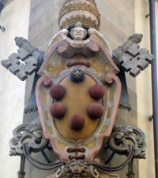

San Marco Area: Sample Itinerary, Tues-Sun AM
- Accademia
- San Marco Museum
- Lunch Nearby Restaurants
- Santa Maria Novella in the afternoon
Detailed Site Information
| Site | Hours | Cost | Reservation | Notes |
|---|---|---|---|---|
| Accademia | Tu-Su, 8:15-6:50 | €8 | Online* | *€4 reservation fee, book online to avoid line |
| San Marco Museum | M-F 8:15-1:50pm, Sa/Su 8:15-4:50pm | €4 | No | Dress appropriate to religious site. |
Nearby Restaurants
- SandwiChic, $, takeout, Via San Gallo 3/r
- Alas le Delizie Greche, $$-$$$, Via Camillo Benso Cavour 32
- Ristorante Accademia, $$-$$$, Piazza di San Marco 7/r
- Il Desco Bistro, $$-$$$, Via Camillo Cavour 27
The Medici Family
The House of Medici was a Florentine banking family and political dynasty that began to gain prominence under Cosimo de' Medici in the first half of the 15th century. The Medici bank was the largest in Europe and allowed the family to gain political power.
The family produced three Popes of the Catholic Church (Leo X, Clement VII, and Leo XI) and two regent queens of France (Catherine and Marie). The family became hereditary dukes of Florence in 1531 and ruled the Grand Duchy of Tuscany until 1737.
The family commissioned numerous buildings and works of art that can be seen throughout Florence today.